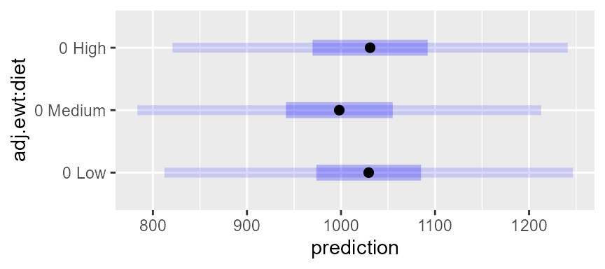

Prediction in **emmeans**
emmeans package, Version 1.10.2
Source:vignettes/predictions.Rmd
predictions.RmdIn this vignette, we discuss emmeans’s rudimentary capabilities for constructing prediction intervals.
Contents
Focus on reference grids
Prediction is not the central purpose of the emmeans
package. Even its name refers to the idea of obtaining marginal averages
of fitted values; and it is a rare situation where one would want to
make a prediction of the average of several observations. We can
certainly do that if it is truly desired, but almost always, predictions
should be based on the reference grid itself (i.e., not the
result of an emmeans() call), inasmuch as a reference grid
comprises combinations of model predictors.
Need for an SD estimate
A prediction interval requires an estimate of the error standard
deviation, because we need to account for both the uncertainty of our
point predictions and the uncertainty of outcomes centered on those
estimates. By its current design, we save the value (if any) returned by
stats::sigma(object) when a reference grid is constructed
for a model object. Not all models provide a
sigma() method, in which case an error is thrown if the
error SD is not manually specified. Also, in many cases, there may be a
sigma() method, but it does not return the appropriate
value(s) in the context of the needed predictions. (In an object
returned by lme4::glmer(), for example,sigma()` seems to
always returns 1.0.) Indeed, as will be seen in the example that
follows, one usually needs to construct a manual SD estimate when the
model is a mixed-effects model.
So it is essentially always important to think very specifically
about whether we are using an appropriate value. You may check the value
being assumed by looking at the misc slot in the reference
grid:
rg <- ref_grid(model)
rg@misc$sigmaFinally, sigma may be a vector, as long as it is
conformable with the estimates in the reference grid. This would be
appropriate, for example, with a model fitted by
nlme::gls() with some kind of non-homogeneous error
structure. It may take some effort, as well as a clear understanding of
the model and its structure, to obtain suitable SD estimates. It was
suggested to me that the function insight::get_variance()
may be helpful – especially when working with an unfamiliar model class.
Personally, I prefer to make sure I understand the structure of the
model object and/or its summary to ensure I am not going astray.
Feedlot example
To illustrate, consider the feedlot dataset provided
with the package. Here we have several herds of feeder cattle that are
sent to feed lots and given one of three diets. The weights of the
cattle are measured at time of entry (ewt) and at time of
slaughter (swt). Different herds have possibly different
entry weights, based on breed and ranching practices, so we will center
each herd’s ewt measurements, then use that as a covariate
in a mixed model:
feedlot = transform(feedlot, adj.ewt = ewt - predict(lm(ewt ~ herd)))
require(lme4)
feedlot.lmer <- lmer(swt ~ adj.ewt + diet + (1|herd), data = feedlot)
feedlot.rg <- ref_grid(feedlot.lmer, at = list(adj.ewt = 0))
summary(feedlot.rg) ## point predictions## adj.ewt diet prediction SE df
## 0 Low 1029 25.5 12.0
## 0 Medium 998 26.4 13.7
## 0 High 1031 29.4 19.9
##
## Degrees-of-freedom method: kenward-rogerNow, as advised, let’s look at the SDs involved in this model:
lme4::VarCorr(feedlot.lmer) ## for the model## Groups Name Std.Dev.
## herd (Intercept) 77.087
## Residual 57.832
feedlot.rg@misc$sigma ## default in the ref. grid## [1] 57.83221So the residual SD will be assumed in our prediction intervals if we
don’t specify something else. And we do want something else,
because in order to predict the slaughter weight of an arbitrary animal,
without regard to its herd, we need to account for the variation among
herds too, which is seen to be considerable. The two SDs reported by
VarCorr() are assumed to represent independent sources of
variation, so they may be combined into a total SD using the Pythagorean
Theorem. We will update the reference grid with the new value:
We are now ready to form prediction intervals. To do so, simply call
the predict() function with an interval
argument:
predict(feedlot.rg, interval = "prediction")## adj.ewt diet prediction SE df lower.PL upper.PL
## 0 Low 1029 99.7 12.0 812 1247
## 0 Medium 998 99.9 13.7 783 1213
## 0 High 1031 100.7 19.9 821 1241
##
## Degrees-of-freedom method: kenward-roger
## Prediction intervals and SEs are based on an error SD of 96.369
## Confidence level used: 0.95These results may also be displayed graphically:
plot(feedlot.rg, PIs = TRUE)
The inner intervals are confidence intervals, and the outer ones are the prediction intervals.
Note that the SEs for prediction are considerably greater than the
SEs for estimation in the original summary of feedlot.rg.
Also, as a sanity check, observe that these prediction intervals cover
about the same ground as the original data:
range(feedlot$swt)## [1] 816 1248By the way, we could have specified the desired sigma
value as an additional sigma argument in the
predict() call, rather than updating the
feedlot.rg object.
Predictions on particular strata
Suppose, in our example, we want to predict swt for one
or more particular herds. Then the total SD we computed is not
appropriate for that purpose, because that includes variation among
herds.
But more to the point, if we are talking about particular herds, then
we are really regarding herd as a fixed effect of interest;
so the expedient thing to do is to fit a different model where
herd is a fixed effect:
feedlot.lm <- lm(swt ~ adj.ewt + diet + herd, data = feedlot)So to predict slaughter weight for herds 9 and
19:
newrg <- ref_grid(feedlot.lm, at = list(adj.ewt = 0, herd = c("9", "19")))
predict(newrg, interval = "prediction", by = "herd")## herd = 9:
## adj.ewt diet prediction SE df lower.PL upper.PL
## 0 Low 867 63.6 53 740 995
## 0 Medium 835 64.1 53 707 964
## 0 High 866 66.3 53 733 999
##
## herd = 19:
## adj.ewt diet prediction SE df lower.PL upper.PL
## 0 Low 1069 62.1 53 945 1194
## 0 Medium 1037 62.8 53 911 1163
## 0 High 1068 64.0 53 940 1197
##
## Prediction intervals and SEs are based on an error SD of 57.782
## Confidence level used: 0.95This is an instance where the default sigma was already
correct (being the only error SD we have available). The SD value is
comparable to the residual SD in the previous model, and the prediction
SEs are smaller than those for predicting over all herds.
Predictions with Bayesian models
For models fitted using Bayesian methods, these kinds of prediction
intervals are available only by forcing a frequentist analysis
(frequentist = TRUE).
However, a better and more flexible approach with Bayesian models is
to simulate observations from the posterior predictive distribution.
This is done via as.mcmc() and specifying a
likelihood argument. An example is given in the “sophisticated models”
vignette.